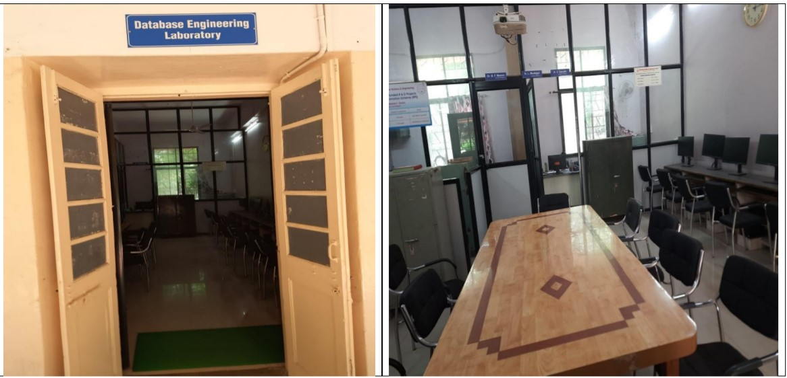
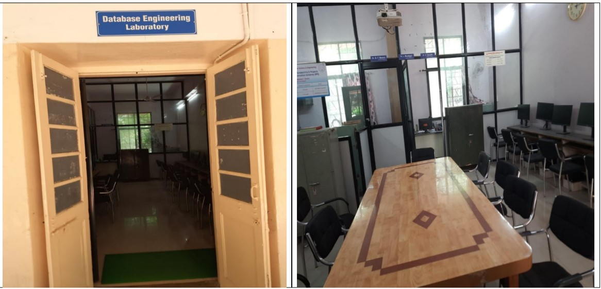

The Department of Computer Science and Engineering - Walchand College of
Engineering, Sangli was established in 1986. The department has
contributed in producing several eminent engineers who are in key
positions of the Government organizations, public sector and
Multinational companies and have brought in significant contributions in
various regions of India. Alumni of the department can be found in all
public and private sector organizations operating in diverse fields,
holding senior key positions in the organizations.
The Department offers a four-year course leading to the Bachelor's
Degree in Computer Science and Engineering (B. Tech.) and a two-year
course leading to Master's degree (M. Tech.) in Computer Science and
Engineering. The curriculum contains mandatory as well as elective
courses and has various tracks and a choice based credit system with
balanced theory, laboratory and project oriented courses. The track
system provides the students; the flexibility to choose the elective
courses based on the aptitude, interests and career plan of students.
Courses and course contents are designed by taking inputs from Industry
Consultation Committee (ICC). This makes the curriculum of these
programmes dynamic, in-line with the current trends of the Computer and
IT Industries. These programmes attract meritorious students every year
at the entry level for both UG and PG programmes.
Department also provides research guidance to Ph.D. students of Shivaji
University, Kolhapur. Running of Ph.D. programme in the CSE department
has boosted the research culture further. Department is a recognised
research centre of Shivaji university of Kolhapur and Admissions are
under NDF, ADF schemes and also minor centre for QIP research scheme
Students of the department are engaged in various co-curricular and
extra-curricular activities. They proactively participate in different
prestigious competitions and have also won various national level coding
competitions such as Hackathons. The Placement of UG students for the
past three years has been consistently above 85%.
 
